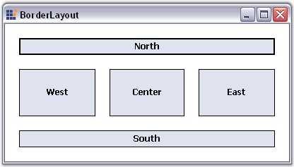

BorderLayout is a Layout Manager which allows the user to arrange and layout the Child controls along the borders and at the center, just like the .NET framework's built-in docking support.

Figure 656: Buttons aligned along the Borders using BorderLayout
 Note: BorderLayout does not arrange the
Child components automatically like the other Layout Managers.
Note: BorderLayout does not arrange the
Child components automatically like the other Layout Managers.
A sample which demonstrates the BorderLayout is available in the below sample installation path.
..My Documents\Syncfusion\EssentialStudio\Version Number\Windows\Tools.Windows\Samples\2.0\Layout Manager Package\LayoutManagers
See Also
 Configuring BorderLayout
Configuring BorderLayout